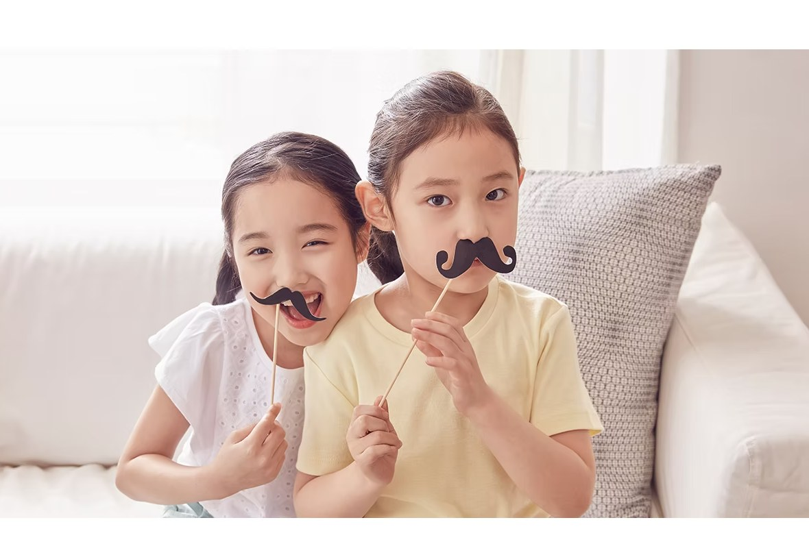
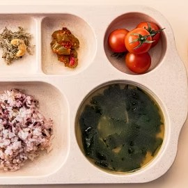
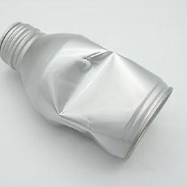
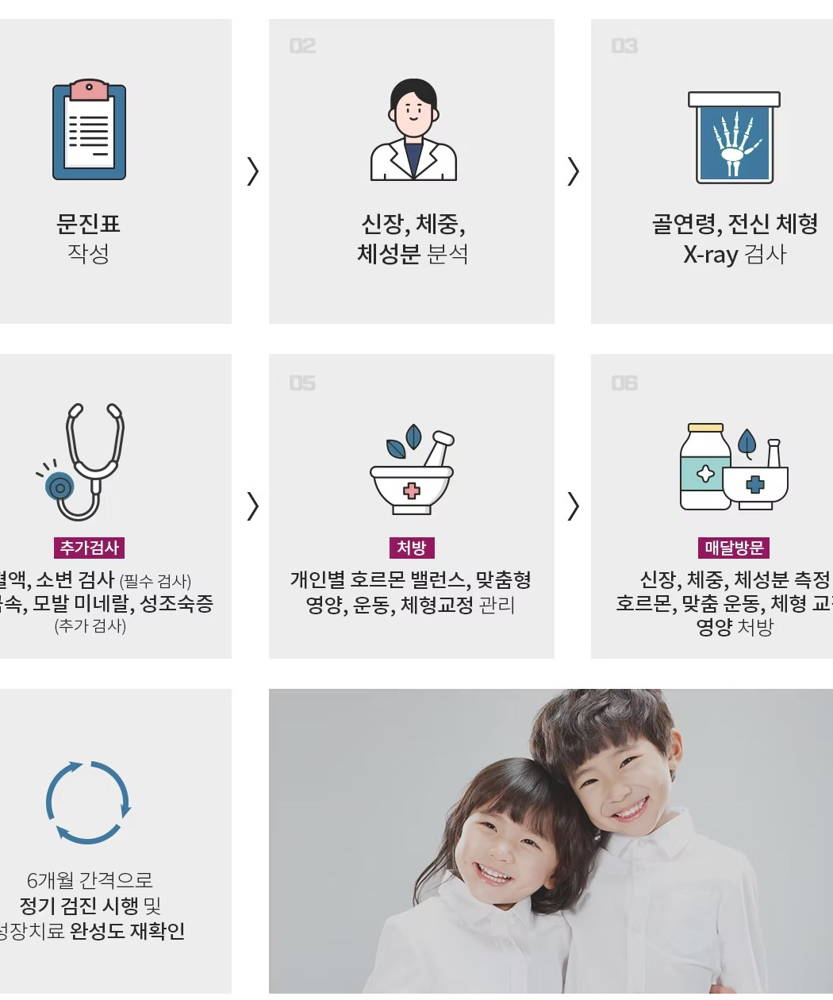
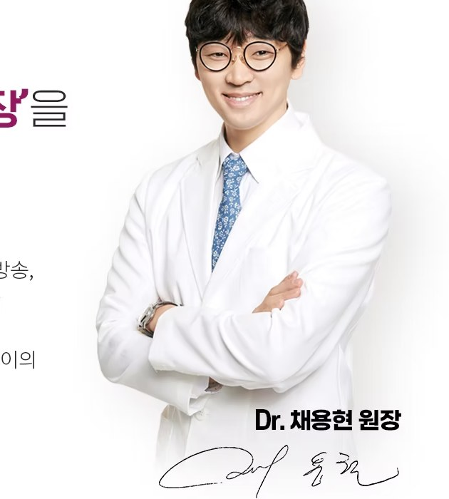

성조숙증 관리

성장을 방해하는 성조숙증!
혹시 우리아이도?
성조숙증은 여아 만 8세 이전, 남아 만 9세 이전의
아이들에게 2차 성징이 나타나는 현상으로
또래 아이들 보다 일찍 가슴멍울, 초경, 음모, 변성기 등
사춘기 시기에 나타나는 신체변화가 시작되는 것을 말합니다

성조숙증이 키성장에 주는 영향
성호르몬이 너무 이른 시기에 분비되면 키 크는 속도가
일시적으로 증가하지만 시간이 지나면 성장판이 조기에 닫히면서
키성장이 멈추게 됩니다

단순히 성호르몬만 억제시키면
키성장이 느려지는 경우도 있다는 사실 알고 계시나요?
대부분의 엄마들이 모르는 사실!
성조숙증으로 인해 단순히 성호르몬 억제시키면 최종키에도 영향을 줄 수 있습니다
연세새봄의원은 단순히 성호르몬만 억제시키지 않고
아이의 수면, 영양, 사춘기의 진행 속도, 호르몬 밸런스를 적극적으로 관리하여
성조숙증도 완화시키고 동시에 건강한 성장을 관리하고 있습니다
성조숙증 원인은 무엇일까요?

자궁에 관련된 질병이 있는 경우

과도한 지방을 섭취하는 경우

비만에 해당되는 경우

환경호르몬 증가로 인한 경우

신체활동의 부족에 의한 경우

스트레스로 인한 경우
성조숙증 예방하는 생활습관
연세새봄의원은 불균형한 호르몬, 수면 습관,
식습관 관리를 통해 아이의 2차 성징을 관리합니다

식이 관리

생활 관리
규칙적인 운동
정기 건강체크
진료 과정
아이의 성장 관리는 아이, 부모님, 의사가 함께 하는 과정입니다
따라서 187 성장 클리닉의 모든 진료 과정을 부모님과 함께 진행하고 있습니다
초진 순간부터 성장 치료가 종료된 후 6개월~1년까지 지속적인
케어를 통해 아이의 건강한 성장을 관리합니다

연세새봄에서는
‘건강하고 균형있는 성장’을
약속 드립니다
연세새봄은 오랜 시간 성장치료를 해온 경험을
바탕으로 미래의 운동선수를 준비하고 있거나 방송,
연기, 모델을 준비하는 우리 아이를 위한 특별한
성장 클리닉 입니다. 바른 영양과 수면, 그리고
균형 잡힌 호르몬 치료를 통해 건강하고 밝은 아이의
미래를 함께 준비합니다.
